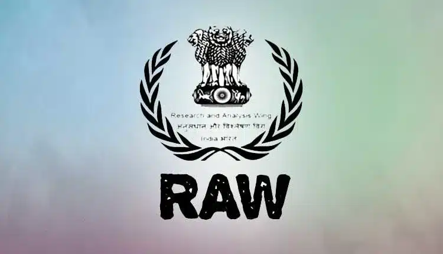

Working with stakeholders of the web
A range of organizations join the World Wide Web Consortium as Members to work with us to drive the direction of core web technologies and exchange ideas with industry and research leaders. We rotate randomly a few of our Member organizations' logos underneath.
The Web Consortium and its members, with help from the public and the web community, focus on a range of business ecosystems that the web transforms, including E-commerce, Media & Entertainment, Publishing and several other areas.
